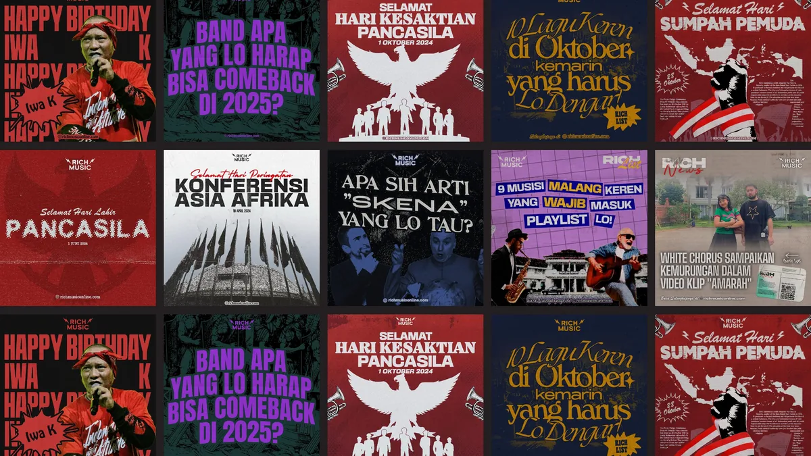
Full social media design and event production materials for Rich Music Online, a digital music platform covering Indonesia's independent music scene. Work includes event e-flyers for DistorsiKERAS shows across Jakarta, Bandung, and Medan, lanyard merchandise design, and ongoing social media content.
The Products
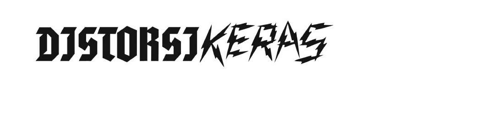
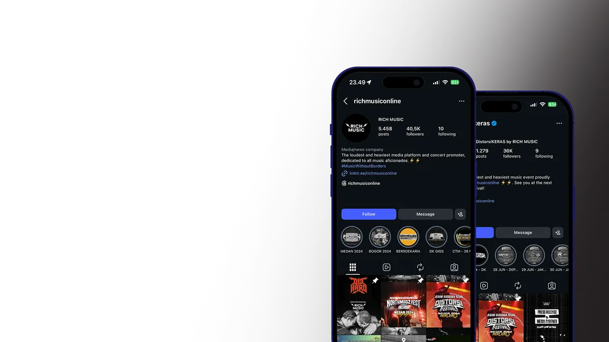

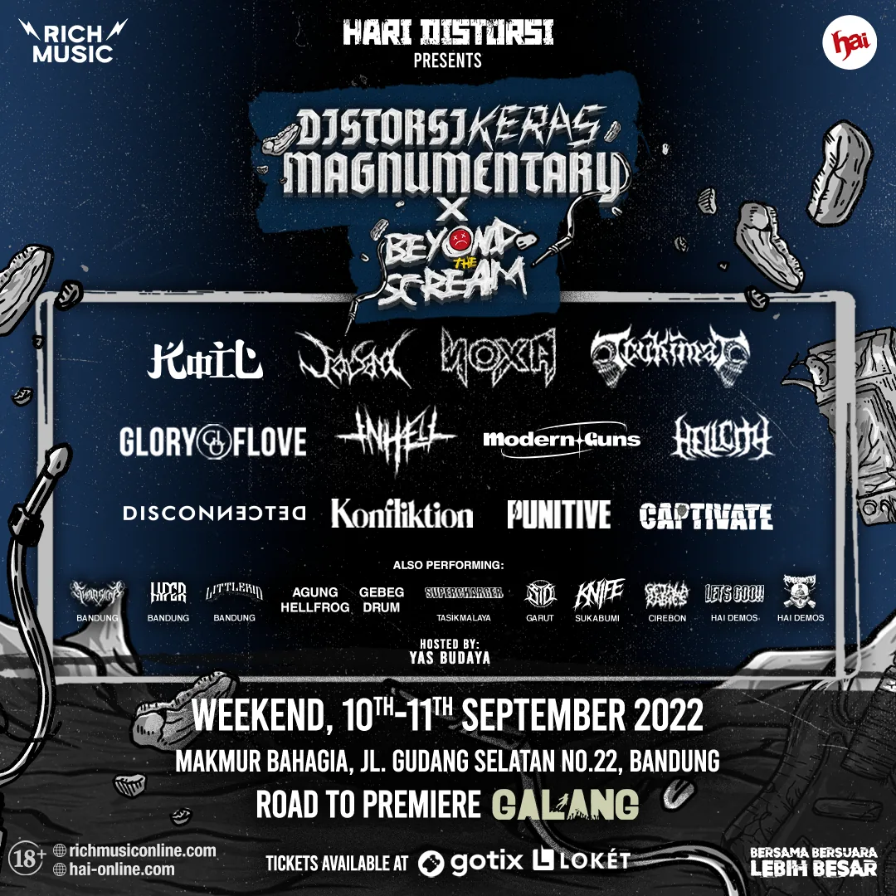
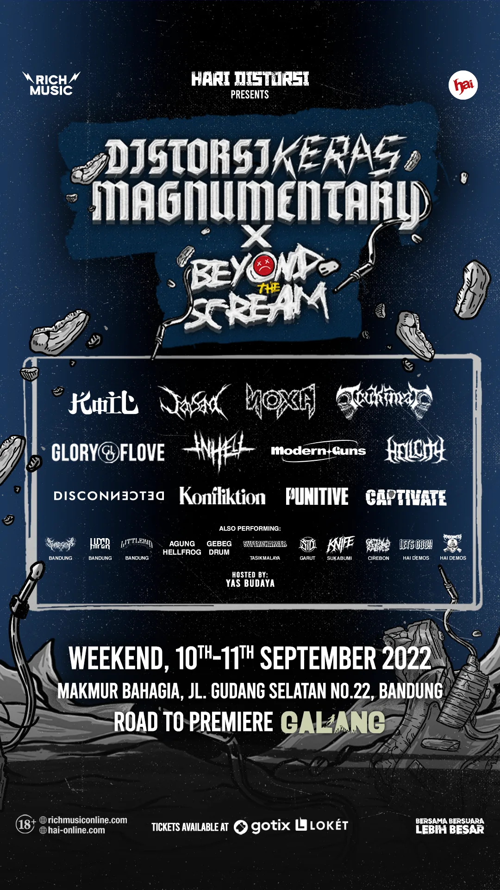
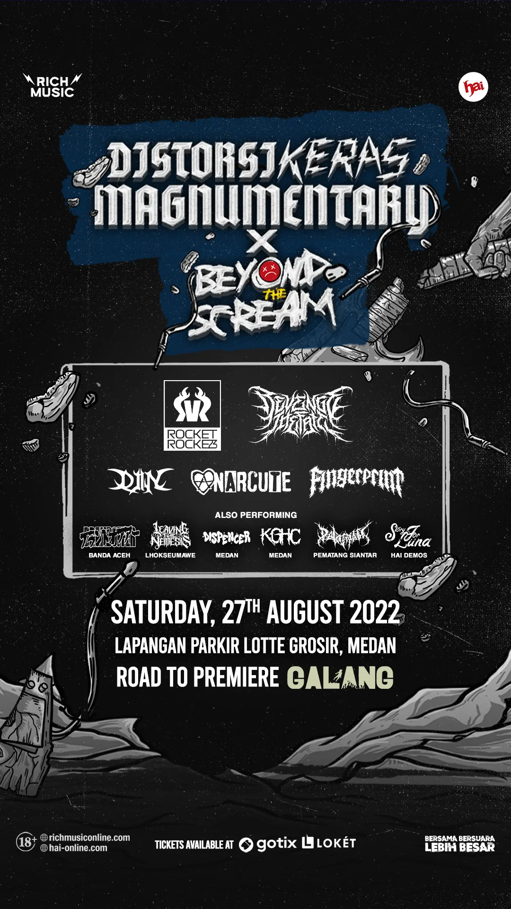
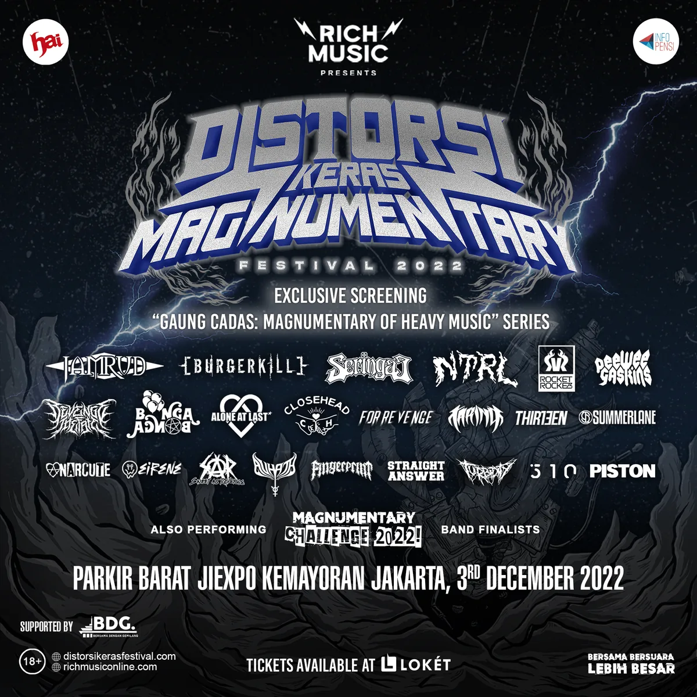
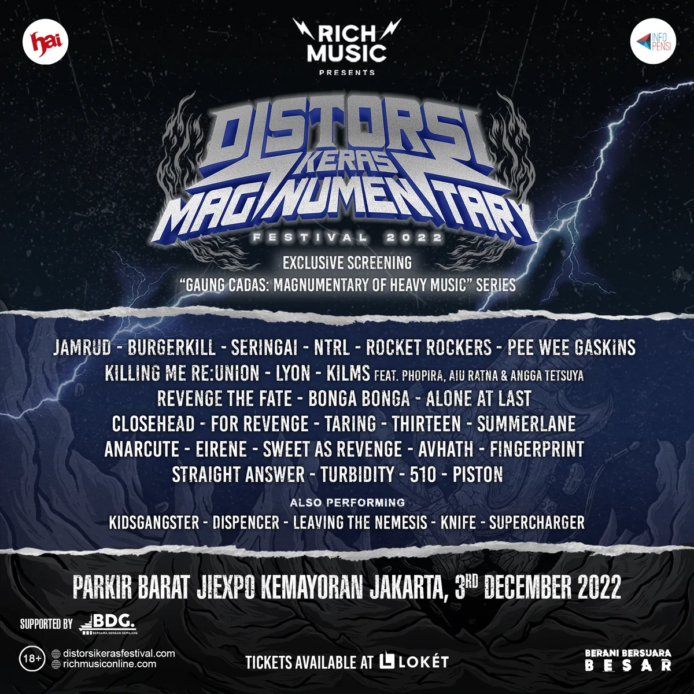
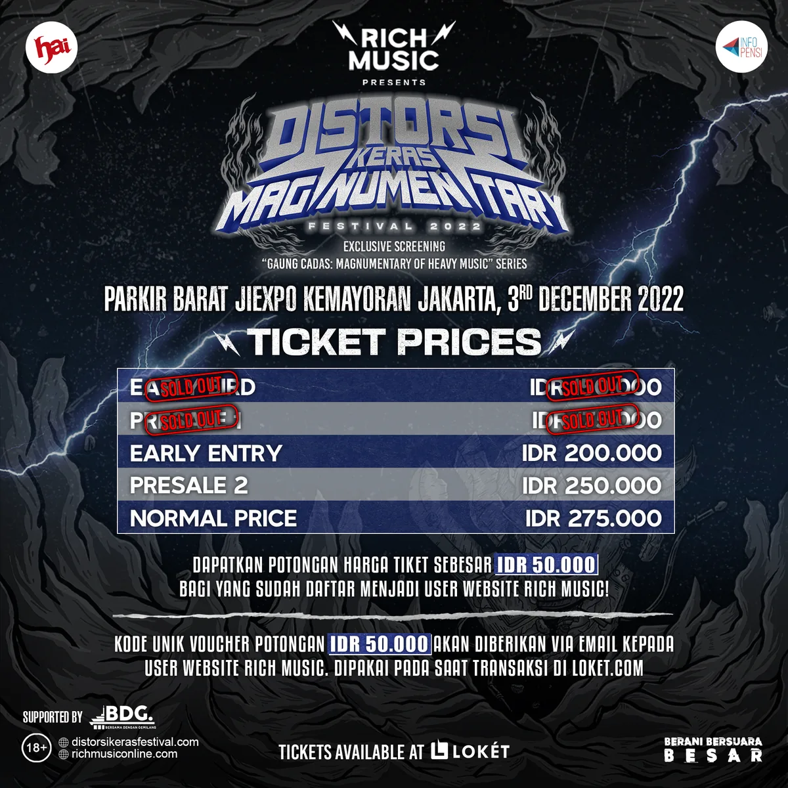
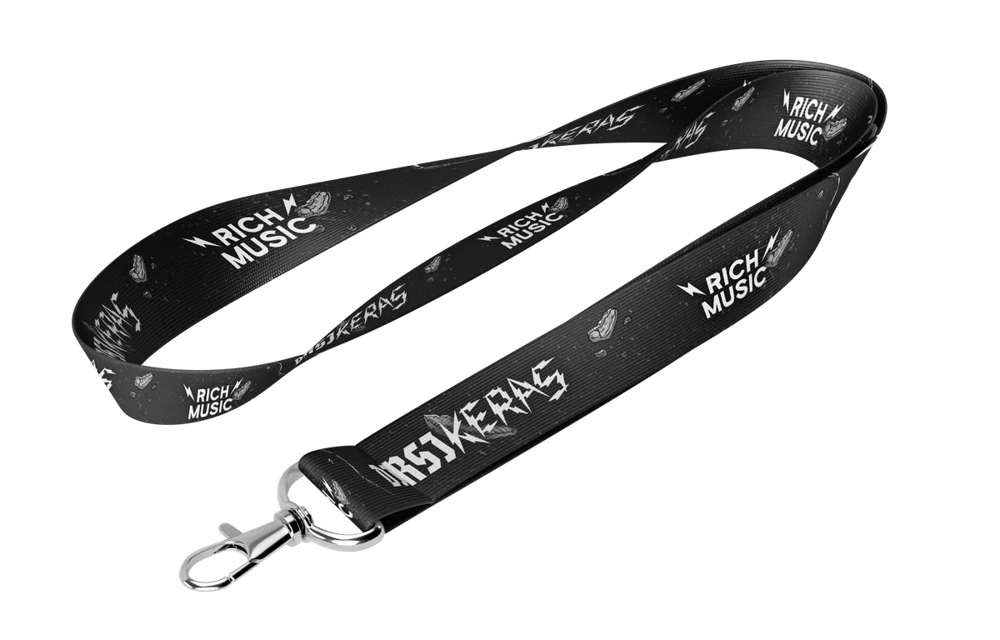
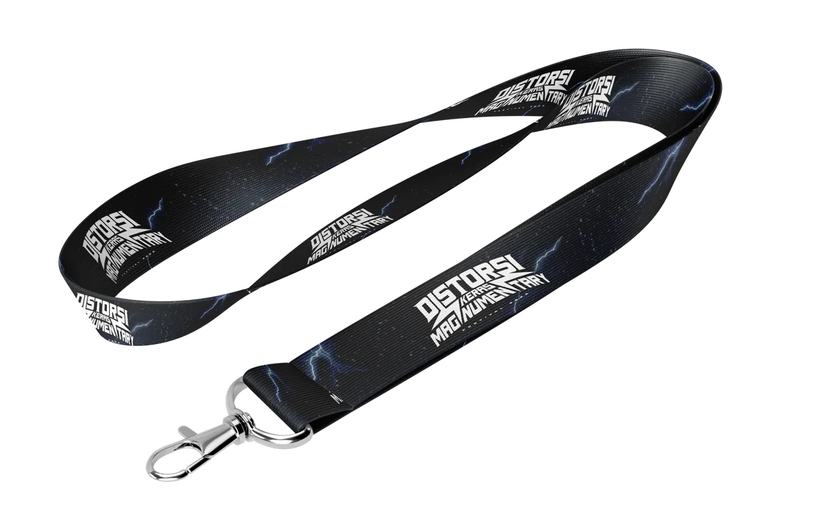